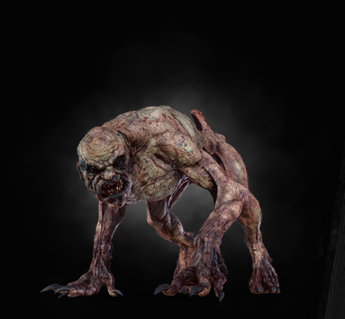

|  |
Bestiary Description:
Ghouls creep and crawl at night
Eating everything in sight
In a snap they'd eat you, too
Chop you up for a ghoulish stew!
— Children's Ryme
Ghouls and graveirs are hard to describe. In part, they resemble humans - yet on the whole, they are the utter negation of all that is human. Though they have arms and legs like men, they walk on all fours like dogs or badgers. Though they have eerily familiar faces, one searches them in vain for any sign of sentiment, reason or even a spark of consciousness. They are driven by one thing and one thing only: an insatiable craving for human flesh. |